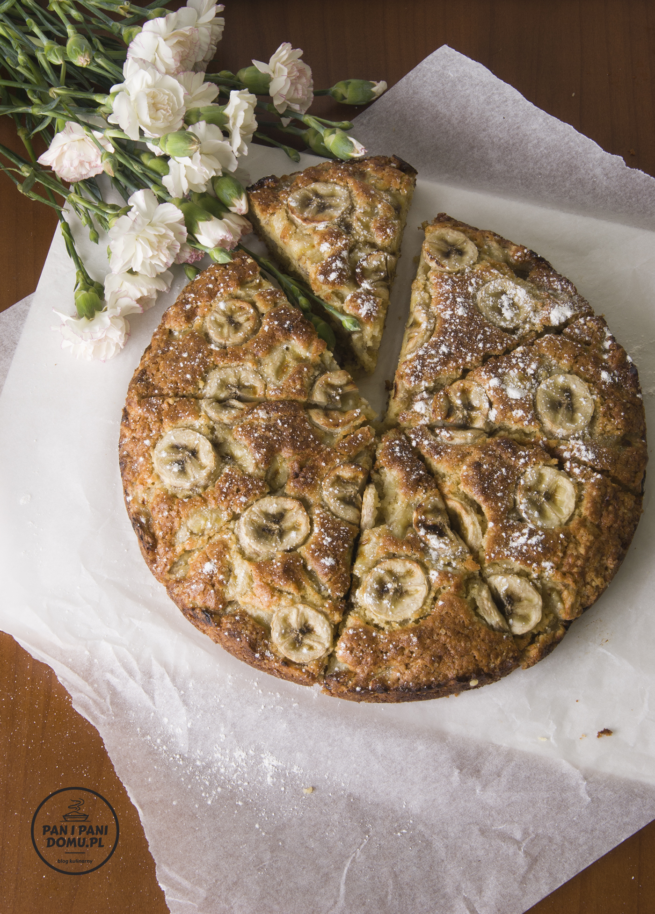

Przepis na ciasto bananowe
Ten przepis jest niesamowity! Uwielbiam banany same w sobie, ale gdy mogę z nich przygotować proste ciasto bananowe to czuję się jak w niebie. Do przygotowania poniższego przepisu potrzebujesz ok 10-15 minut. Tylko tyle wystarczy aby odpowiednio połączyć wszystkie składniki po czym ciasto jest gotowe do pieczenia w piekarniku (ok. 40-50 minut).
Gotowe ciasto bananowe jest idealnie wilgotne. Natomiast ma ono jeden minus – rozchodzi się szybciej niż powstawało.
Składniki na szybkie ciasto bananowe:
- 4 mocno dojrzałe banany
- 2 szklanki mąki
- 3 jajka (rozbełtane)
- 3/4 szklanki cukru- może być brązowy
- 200 g masła
- 2 łyżeczki proszku do pieczenia
- 1 płaska łyżeczka sody oczyszczonej
- szczypta soli
Przygotowanie:
Masło rozpuść i pozostaw do ostudzenia. W tym czasie do miski przesiej mąkę, proszek do pieczenia, sodę oczyszczona i szczyptę soli. Dodaj cukier, rozbełtane w osobnym naczyniu jajka i przestudzone już masło. Wszystko razem wymieszaj za pomocą łyżki. Na koniec pokrój banany w półksiężyce i połącz je z ciastem.
Piecz w tortownicy (tortownicę wysmaruj tłuszczem, a na sam spód ułóż papier do pieczenia) o średnicy 26 cm w temperaturze 220 ° C przez 10 minut, a następnie zmniejsz temperaturę do 190 ° C i piecz przez 40 minut. Pod koniec tego czasu możesz sprawdzić czy patyczek wbijany w środek ciasta jest suchy. Jak tak to znaczy, że ciasto jest gotowe. Czas pieczenia jest zależny od rodzaju piekarnika.
Gotowe ciasto posyp z wierzchu cukrem pudrem.
Inne przepisy na sprawdzone ciasta:
- Ciasto kasztanowe
- Ciasto buraczane
Ja ciasto bananowe robiłam jedynie w postaci chlebka bananowego i bardzo takie lubię. Muszę kiedyś wypróbować Twój przepis, wygląda bardzo smakowicie i bananowo
Zdecydowanie musisz Jest pyszne!
Jest pyszne!
Pyszne ciasto wyszlo. Dokładnie z tych składników. Trochę krótszy czas pieczenia w moim starym piekarniku.
Potwierdzam, najlepsze ciasto bananowe, a do tego proste
Wspaniałe! Jutro piekę kolejny raz, wychodzi też z mąką bezglutenową
ja gęste powinno wyjść czy może płynne? mnie wyszło dość gęste
Droga Kasandro. Po połączeniu wszystkich składników ciasto faktycznie jest gęste więc wszystko z Twoim powinno być okay. Pozdrawiamy
Robiłam już trzy razy. Ciasto przepyszne. Polecam wszystkim
czy uda się z mąki orkiszowej lub owsianej?
Witaj. My nigdy nie próbowaliśmy,ale nasi znajomi robią z różnymi mąkami i mówią że wychodzi bardzo dobrze.
Przepis petarda ! Ciasto puszyste !chrupiące ! Szybkie i proste i bardzo smaczne ! ~~~
Robię już chyba 5ty raz ciasto z tego przepisu. Jest przepyszne i zawsze się udaje! Dziękuję